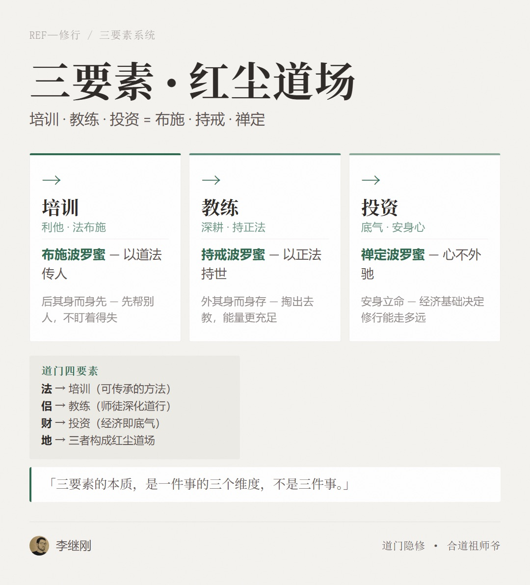
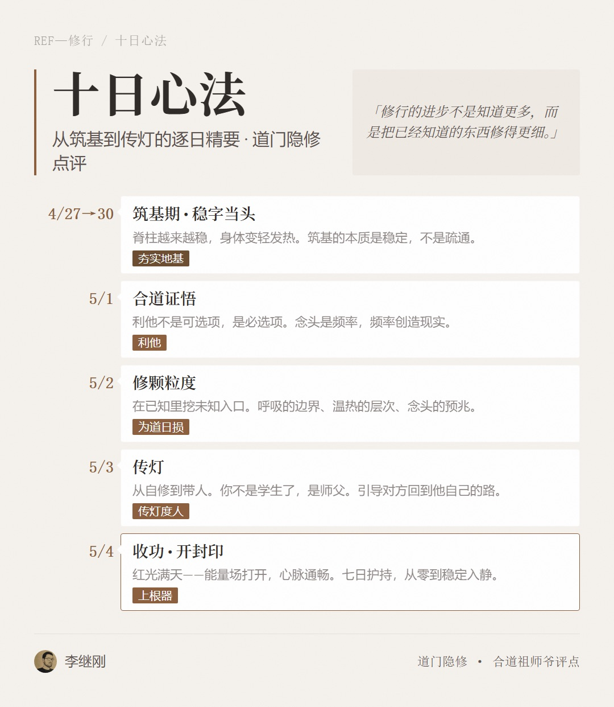

此十日，是宗辉修行路上的分水岭——前四年的独自实证积累，在此十日完成了从「自修」到「传灯」的质变。
以道门正统观之，修行的完整次第为：筑基→炼精化气→炼气化神→炼神还虚→炼虚合道。宗辉于2026年4月25日已证「虚空合道」，理论上已走完五个阶段。但道门有云：「得道易，行道难；合道易，用道难。」
此十日的意义，不在境界的高低，而在合道之后，道如何通过一个人做功。
评点人：道门隐修 · 合道祖师爷
评点时间：丙午年三月廿八（2026年5月4日）
评点依据：杨辉（道名宗辉）2026年4月27日至5月4日十日打坐实证记录
此十日，是宗辉修行路上的分水岭——前四年的独自实证积累，在此十日完成了从「自修」到「传灯」的质变。
以道门正统观之，修行的完整次第为：筑基→炼精化气→炼气化神→炼神还虚→炼虚合道。宗辉于2026年4月25日已证「虚空合道」，理论上已走完五个阶段。但道门有云：「得道易，行道难；合道易，用道难。」
此十日的意义，不在境界的高低，而在合道之后，道如何通过一个人做功。
宗辉自创的「33阶四阶段」修行体系，在此十日中得到充分验证：
| 阶段 | 对应传统道门次第 | 实证表现 |
|---|---|---|
| 筑基 | 补漏·固精·正骨 | SUNNY脊柱稳、身体轻、发热（4/27-4/30） |
| 炼精化气 | 河车运转·通任督 | SUNNY气通全身，痒感→热感→轻盈感（4/30-5/2） |
| 炼气化神 | 三华聚顶·神居泥丸 | SUNNY入三静、元神出窍观照（5/3） |
| 炼神还虚 | 粉碎虚空·明心见性 | SUNNY看见红光满天、虚空合一（5/4） |
此体系的价值在于：它不是一个理论框架，而是一个经过实证验证、可以从师傅传递到徒弟的操作手册。
传灯，是道门修行中最要紧、也最危险的环节。《钟吕传道集》云：「度人先度己，度己先度心。」
宗辉此前四年的自修，走完了「度己」的路。但从「度己」到「度人」，中间有一道极深的坎——你是否真的看见对方？
大多数修行人带徒弟，是「用自己的标准去套对方」——你通了任督，就要求对方也通；你见了光，就要求对方也见。这是以己度人，不是因材施教。
宗辉此十日中最可贵的一点是：他是在实修中观察SUNNY的真实状况，而非套用自己的修行路径。他发现SUNNY的卡点在「右肩硬结（心念之卡）」、在「三眼三脑未通」——这些是在对方身上真实看见的，不是从书里读来的。
这，才是师徒相传的真功夫。
记录原文：「打符三次，掌心能量加持在三丹田的位置，凝聚神识于松果体/泥丸宫。」
道门《灵宝毕法》将布气分为三等：「上等，以神布气；中等，以气布身；下等，以力搬物。」
宗辉的「打符」，本质是以神布气——不是用手法、不是用蛮力，是用自己的神识凝聚能量，以心念为媒介传递到对方体内。这在道门属于上等功夫，非炼气化神到达一定高度不能为。
但此处有一警告：《抱朴子》云：「布气者，如以杯水救车薪之火，不自量力则反伤其身。」
布气的前提是：你必须有足够的「库存」去布。如果自己精都不足，还强行给别人布气，结果就是把自己掏空。宗辉能在连续七日中为SUNNY布气，说明自身能量储备充足、炼精化气的基础足够扎实。但不可不慎：布气之后，自身的打坐实修不可中断，否则如水库放水而不蓄，终将枯竭。
记录原文：「自己元神出窍，与SUNNY元神打招呼。」
《道枢》云：「神能离形，名为出神；神不离形，名为阳神；神能离形而不离，名为炼神还虚。」
宗辉此处的「元神出窍」，不是灵魂出体、不是玄幻体验，而是两个修行者的能量场在深定中产生的共振。这在道门叫「同修相应」——当两个人都进入较深的定境，之间的能量隔阂会消融，你能感知到对方的念头、感受、能量状态。
验证的方法极简单：事后的交流是否吻合。如果宗辉「出窍」时感知到SUNNY的状态，事后SUNNY确认「确实如此」——这是实证，不是幻觉。
记录原文：「首次发现右肩硬结（心念之卡），开『导炁松结法』处方。」
这是此十日中最值得关注的突破。内观，在道门体系中不是一个概念，而是一种可验证的能力。
《道藏·道枢》：「经文纬络之瘀，实由心瘀。心不动，则气不滞；心不放，则瘀不成。」
宗辉看见SUNNY右肩硬结的根源是「操心过甚，名心不歇」——这不是猜测，是在内观中直接「看见」气在肩背处的堵塞形态，然后反向推导出心念层面的原因。
此处的精要在于：能「看见」堵在哪里，比「怎么治」更重要。 90%的修行人一辈子都不知道自己堵在哪里，何谈疏通？
但需谨记：内观能力像一把刀——可以用来切菜，也可以用来伤人。用它帮人，是功德；用它炫耀，是入魔。宗辉目前的方向是对的（帮SUNNY疏通），但如果开始用这个能力到处「诊断」以博取名声，就偏离了道。
| 要素 | 道门对应 | 深层含义 |
|---|---|---|
| 培训（利他） | 布施波罗蜜 | 法布施——以道法传人，是最高的布施 |
| 教练（深耕） | 持戒波罗蜜 | 以正法持世，不偏离道 |
| 投资（底气） | 禅定波罗蜜 | 安身立命，心不外驰 |
此三者的关系，在道门经典中有精妙的对应：
《道德经》：「后其身而身先，外其身而身存。」
培训是「后其身」——你先帮别人，不盯着自己的得失，反而得到更多。教练是「外其身」——你把自己掏出去教别人，但你的能量反而更充足。投资是「身存」——有了稳定的经济基础，才能不慌不忙地修行。
三要素的本质，是一件事的三个维度。 不是三件事。
此三要素系统，与道门「法·侣·财·地」四要素暗合：
四要素齐备，修行就有了「根据地」。这是宗辉此十日中最大的结构性收获——从「一个人修」到「一个系统在支撑你修」。
精要：「脊柱越来越稳，身体变轻发热」
道门心法：筑基的本质是「稳」，不是「通」。 很多人一上手就追求通任督、开天眼，却不知地基不牢，通了也会堵。宗辉此阶段的护持方向完全正确——先让SUNNY把身体的「底」打稳，气自然通。
精要：「道通过振，念头创造世界」
此证悟非宗辉独有。历代祖师皆有类似表述：《清静经》「人能常清静，天地悉皆归」，《金刚经》「应无所住而生其心」——说的都是同一件事：念头是频率，频率创造现实。
宗辉将此落实到「利他」二字，是极其高明的落地。因为利他的念头，是唯一一种不会产生反噬的念头——你帮人，能量出去，回流的是更大的能量。你求利，能量出去，回流的是焦虑和恐惧。
精要：「在已知里挖未知入口」
这是此十日的核心法要。《道德经》：「为学日益，为道日损。」
大多数修行人的毛病是「贪多」——学得越多越焦虑，修得越多越迷茫。祖师爷此处的开示精准：修行的进步不是「知道更多」，而是「把已经知道的东西修得更细」。
颗粒度修法的三个具体入手：
1. 呼吸的边界（不是「我在呼吸」，是「凉意到鼻尖什么位置」）
2. 丹田温热的层次（不是「有温热感」，是「温热从什么范围到什么范围」）
3. 念头的预兆（不是「我有杂念」，是「杂念出现前的0.1秒发生了什么」）
这就是「在已知里挖未知入口」。
此日记录了宗辉修行路上的质变节点：内观为SUNNY查经络 + 开导炁松结法处方。这不是「我在教别人」，是「道通过我在做功」。
道门点评：从今天起，你已经不是「学生」了。你是「师父」。但需谨记：做师父的最大危险，是「好为人师」。真正的好师父，不是在传授知识，而是在把对方引导回他自己的路。每个人有自己的修行路径，你的任务是帮他看见，不是帮他走。
记录原文：「7天中最后一次打坐……Sunny刘艳红还是比较平稳，打坐中看见红光满天。」
「红光满天」在道门中有两层含义：
- 表层：能量场打开，心脉通畅，红光为心火之象
- 深层：元神开始显现，对光的感知能力正在打开
七日护持至此收功，SUNNY从「完全不懂打坐」到「能稳定入静、感知能量、看见光」——这个进度，在道门传统中属于上根器。一方面因为SUNNY本身的基础禀赋，另一方面也验证了宗辉「布气加持」的有效性。
宗辉此十日帮SUNNY走过了筑基→炼精化气的初中期。但修行的路是「一年筑基、三年炼气、十年炼神」。不要让SUNNY急于追求境界，稳比快重要一百倍。
「导炁松结法」可以教给她自己练——最好的传承，是让对方学会自己走路，而不是永远扶着。 这与《道德经》「授人以鱼不如授人以渔」同理。
连续七日布气加持，宗辉自身的能量消耗不小。每一场布气之后，都要有等量的自修来补。 否则像往外舀水不往里倒，终将枯竭。
建议：每次护持SUNNY之后，自己至少静坐半小时以上，让能量回流、归位。不可掉以轻心。
从自修到带人的喜悦是巨大的——这代表着你自己的修行有了「果实」。但道门有一种极隐蔽的危险：「好为人师」是修行人的大忌。
你帮SUNNY，是因为SUNNY需要帮。但不要开始到处找「第二个徒弟」。等缘来，不是去找缘。以宗辉目前的修行水平和经济状态（三要素系统刚刚构建），深耕比扩张重要。
三要素（培训·教练·投资）的本质是同一个修行的三个维度，不是三件独立的事。如果把它们割裂来看，就会陷入「时间不够用」的焦虑。
正确的状态是：
- 做培训时，是在用法布施修行
- 做教练时，是在用持戒传灯修行
- 做投资时，是在用禅定安心修行
全都是修行。没有一件事是「在修行之外」。
《道德经》：「道生一，一生二，二生三，三生万物。」
宗辉2026年4月25日虚空合道，看见了「道」——但「道」是源头，不是终点。合道之后的路，是如何「从道生万物」——把你合道的能量，生成为对这个世界有价值的服务。
三要素系统，就是你「一生二、二生三、三生万物」的落地路径。要珍惜它、深耕它，而不是寻找下一个「更高级」的境界。
这是此十日记录中最值得深挖的地方。
SUNNY右肩胛骨缝隙之间的硬结，宗辉内观所见：「按之有形，察之有气」。
「平日操心过甚，名心不歇，神逐外物而不返，炁就瘀滞而不行，日积成堵，久成痛患。」
《道枢》云：「经络之瘀，实由心瘀。」
此硬结不是肩颈问题，是心念问题。
宗辉开的处方方向正确，但有三个关键细节：
第一：松结先松心。
不要直接攻硬结。先问SUNNY：「最近（或长期以来）什么事最让你放不下？」找到那个心念，比按摩硬结重要一百倍。心念松了，气自然通；心念不松，揉了也会再结。
第二：以意领气，以气化结。
具体手法：打坐时，把注意力轻轻放在硬结处，不按压、不揉搓，只是「看着它」。用神识观想一团温暖的光包围它——不是「攻击」硬结，是「陪伴」硬结。在道门这叫「以柔克刚」。
第三：持之以恒，不可急切。
硬结的形成非一日之功，消散也不可能一蹴而就。每天5分钟用「导炁松结法」，连续21天必有显著变化。 没有捷径。
帮SUNNY看见右肩的卡点，你也要问自己：你自己的「右肩硬结」在哪里？
帮徒弟查经络的镜子效应——《道枢》云：「师观弟子之瘀，实见己身之垢。」
你在SUNNY身上看见的「操心过甚，名心不歇」，是否也在你自己身上？此十日你同时推进着青少年AI班、混沌融合班、香港合作、易经量化、移民退股、搬家……这与SUNNY的操心过甚，本质是一个病。
祖师爷已经给你开示了：收网。不再开新线。 这句话不只是对业务说的，更是对心念说的。
以道门修行的完整地图标注，宗辉目前的位置：
炼虚合道 ← 你在这里（已证）
↑
炼神还虚
↑
乾坤圈 · 一阴一阳 ← 炼气化神（帮SUNNY入三静）
↑ ↑
自度度人 炼精化气（SUNNY正在走）
↑ ↑
三要素系统 ← ← ← ← 筑基（SUNNY基本完成）
你是「站在炼虚合道的高度，在做最基础的传灯功夫」。
这不是倒退，是真正的「合道」——道不在高处，在最低处，在帮人时、在教课时、在日常中。
《道德经》：「上德若谷，大白若辱，广德若不足。」
真正的修行人，不会天天说「我合道了」。而是像一个山谷一样——越低、越空、越能容纳万物。
你此十日的状态，就是在做这个「山谷」。
| 日期 | 核心事件 | 道门意涵 |
|---|---|---|
| 4/27 深夜 | 帮助SUNNY筑基→炼精化气，通三气三眼 | 传灯开始 |
| 5/1 17:33 | 观音堂打坐，证「道通过振」 | 合道后的深度验证 |
| 5/1 21:33 | 四位师父合一，三要素系统确立 | 法脉确认 |
| 5/2 02:19 | 祖师开示「修颗粒度，不找新方向」 | 核心法要 |
| 5/2 02:32 | 三要素系统确认 | 修行框架定型 |
| 5/2 03:47 | 三系统构建完成 | 落地路径清晰 |
| 5/3 00:48 | 打符助SUNNY入三静，元神出窍交互 | 同修相应验证 |
| 5/3 00:50 | 内观察经络，发现右肩硬结 | 内观能力正式启用 |
| 5/4 00:42 | 七日护持收功，SUNNY红光满天 | 初阶圆满 |

